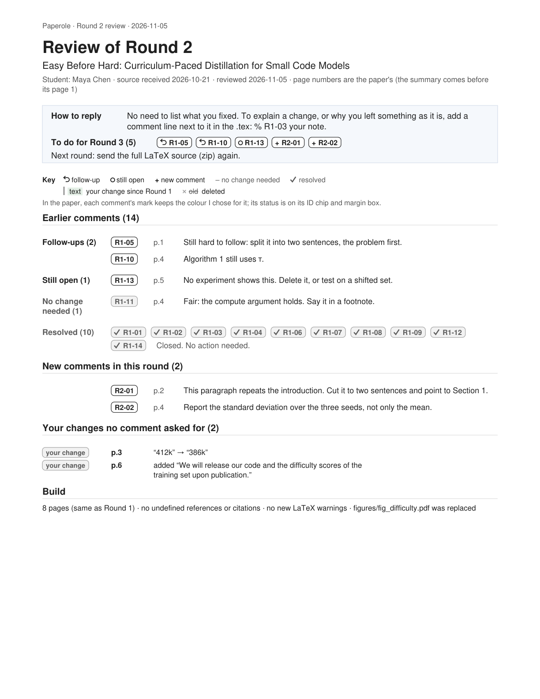
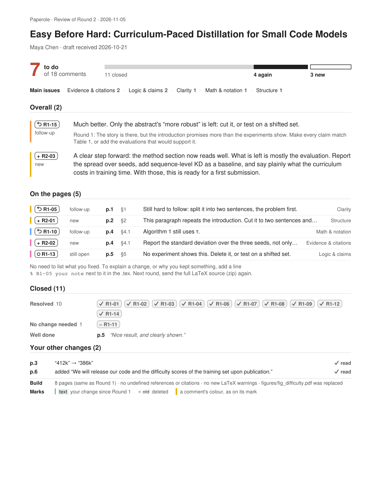
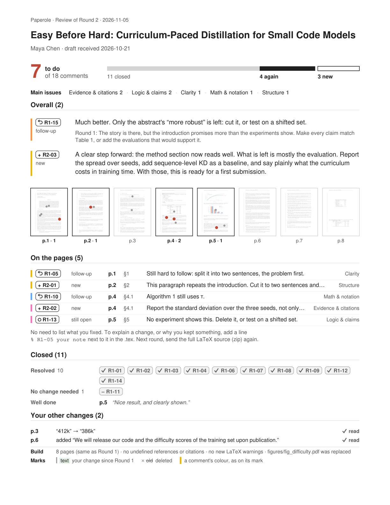
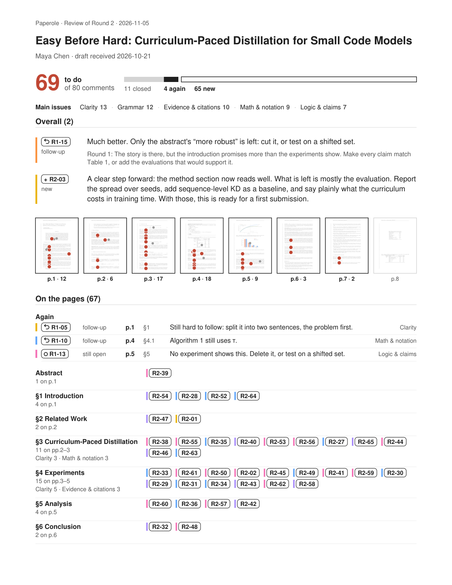
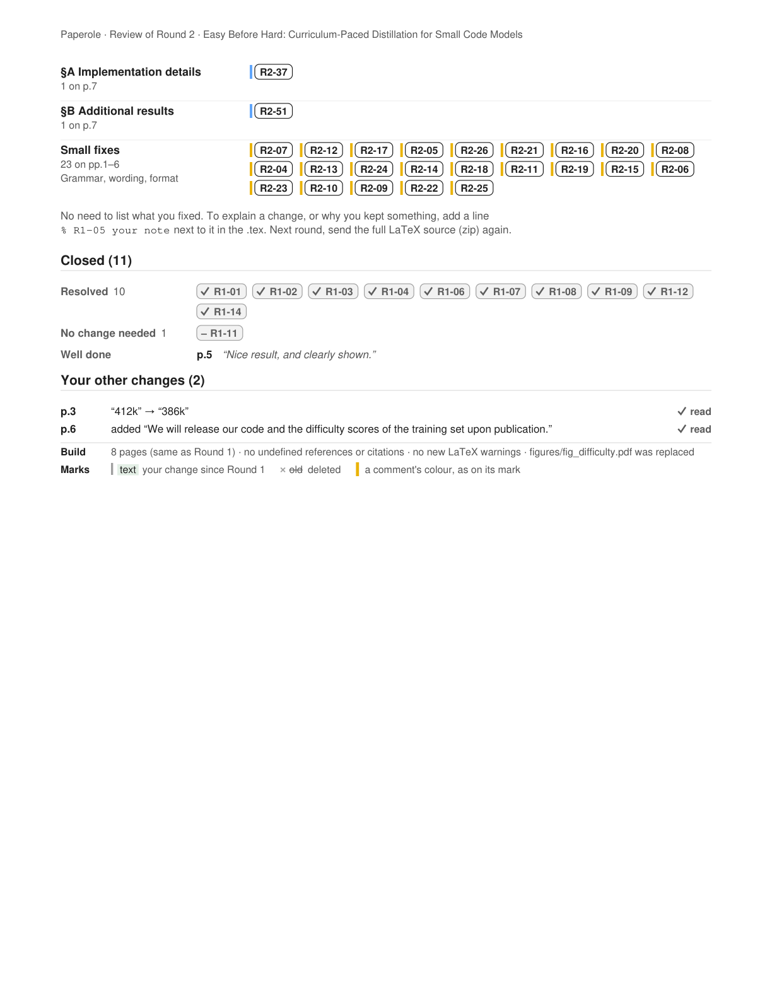
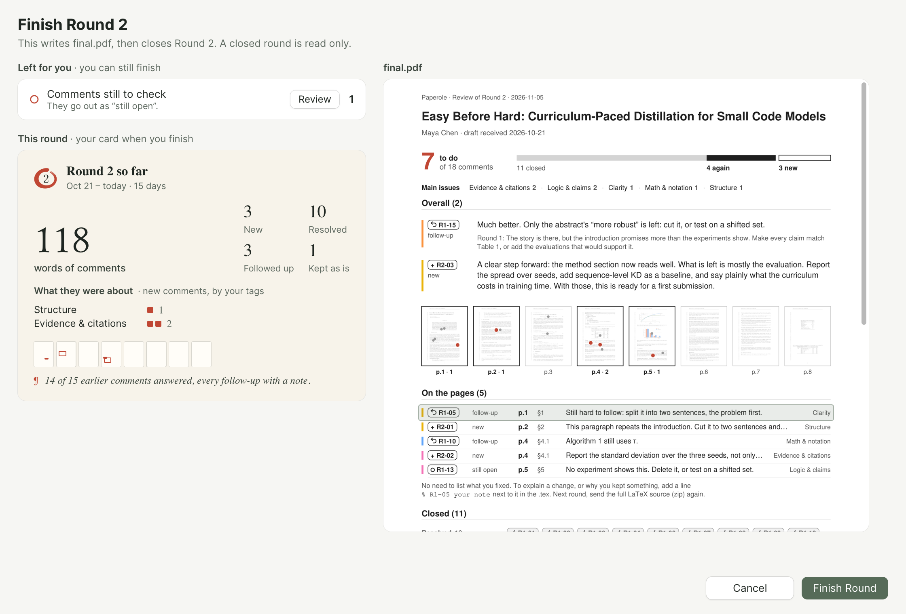
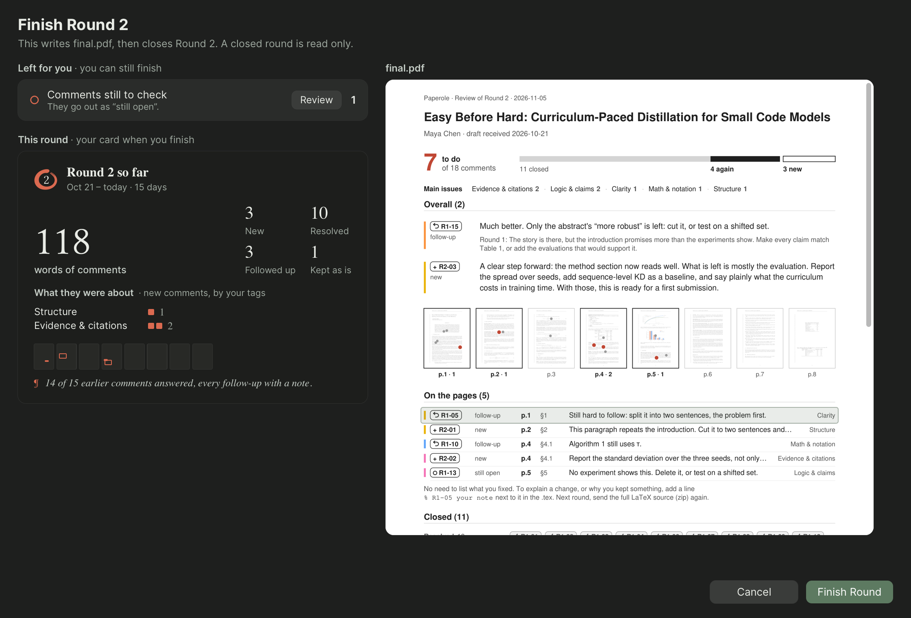

5 to do of 16 comments: a row each, in the paper's order.



The same paper with 62 more new comments, as a newcomer's first draft may get: 67 to do. Past 20 rows the table groups by section; what came back is still a row each, and small fixes share one row.


The round's card stays on the left; the student's first page, live, on the right. The pointer is over R1-05's row.

